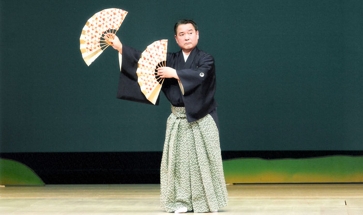
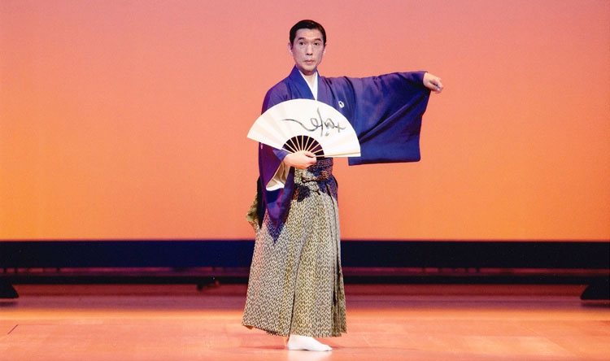
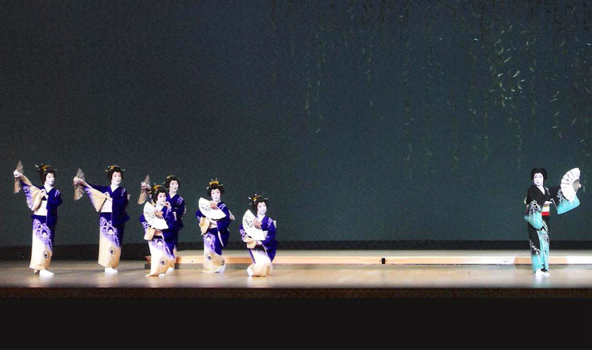
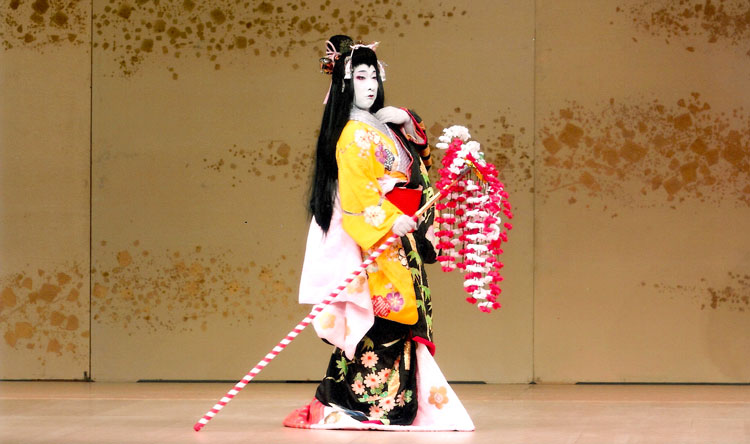

<!DOCTYPE html>
<html lang="ja">

<head>
    <!-- Required meta tags -->
    <meta charset="utf-8" />
    <meta name="viewport" content="width=device-width, initial-scale=1, shrink-to-fit=no" />


    <!-- Bootstrap CSS -->
    <link rel="stylesheet" href="https://stackpath.bootstrapcdn.com/bootstrap/4.5.0/css/bootstrap.min.css"
        integrity="sha384-9aIt2nRpC12Uk9gS9baDl411NQApFmC26EwAOH8WgZl5MYYxFfc+NcPb1dKGj7Sk" crossorigin="anonymous" />
    <link rel="stylesheet" href="style.css">
    <link rel="icon" type="image/x-icon" href="img/fav-1.png">
    <link href="https://fonts.googleapis.com/css2?family=Noto+Serif+JP:wght@400;500;600&display=swap" rel="stylesheet">

    <title>直派分家若柳流について</title>
</head>


<body id="Home" class="bg-light bg-img">
    <header class="sticky-top">
        <nav class="navbar navbar-expand-lg navbar-light bg-light">
            <a class="navbar-brand m-auto text-center" href="index.html">
                 <br class="sp "> 日本舞踊 直派分家若柳流</a>


            <button class="navbar-toggler" type="button" data-toggle="collapse" data-target="#navbarNavAltMarkup"
                aria-controls="navbarNavAltMarkup" aria-expanded="false" aria-label="Toggle navigation">
                <span class="navbar-toggler-icon"></span>
            </button>
            <div class="collapse navbar-collapse" id="navbarNavAltMarkup">
                <div class="navbar-nav pl-5">
                    <a class="nav-item nav-link active" href="index.html#Home">ホーム</a>
                    <a class="nav-item nav-link" href="about.html">直派分家若柳流について</a>
                    <a class="nav-item nav-link" href="index.html#keiko">お稽古場のご案内</a>
                    <a class="nav-item nav-link"
                        href="https://www.facebook.com/%E6%97%A5%E6%9C%AC%E8%88%9E%E8%B8%8A-%E7%9B%B4%E6%B4%BE%E5%88%86%E5%AE%B6%E8%8B%A5%E6%9F%B3%E6%B5%81-319206524870126">活動の様子</a>
                    <a class="nav-item nav-link" href="index.html#contact">お問い合わせ</a>
                </div>
            </div>
        </nav>
    </header>

    <!-- メインコンテンツ -->
    <div class="container bg-white py-5 my-5 contents">

        <!-- 直派分家若柳流について-->
        <div id="about" class="contents_innner">
            <h1 class="text-center pt-3 m-title">直派分家若柳流について</h1>
        </div>

        <div id="icon" class="contents_innner">

            <h2 class="text-center pt-3 m-title ls">〈紋章〉</h2>
            <div class="row d-flex justify-content-around m-4 ">

                <div py-5>
                    
                    <h4 class="text-center bg-green rounded mt-3 ls">正紋</h4>
                </div>
                <div py-5>
                    
                    <h4 class="text-center bg-green rounded mt-3 ls">替紋</h4>
                </div>

                <h5 class="mt-3">
                    若柳流の定紋は、柳とかたばみとで構成されておりまして、当直派分家若柳流におきましては女柳・男柳が仲良く和をもって流儀のかたばみを囲み、名称を「のぞきかたばみに根上がり柳の輪」と致しました。私の郷里盛岡は旧南部藩で御家紋が向い鶴でありますのに因み、又鶴は長寿の鳥という言われもございまして当流といたしましては、根上がり柳の根元に鶴の口端を用いました。
                    柳の葉の合計三十六葉は中国の古典による竜門にいどむ鯉のうろこの数と同数で葉先は勢いよく末広がりのハの字を描いております。
                    なお、当家に伝わる「鬼蔦」を替え紋と致します。</h5>
                <h4 class="text-right m-3">直派分家若柳流 初代家元 若柳壽宏</h4>
            </div>
        </div>
        <!-- 直派分家若柳流について-->

        <!--流舞-->

        <div id="original" class="contents_innner">

            <h2 class="text-center pt-3 m-title border-top border-success ls">〈流舞〉</h2>

            <div class=" p-0 align-self-center  mini-text mx-5">

                <div class="py-3">
                    <h4 class="title ">若柳の賀 <span class="h6">昭和49年8月30日</span></h4>
                    <div class="pb-2 h5 text-i">
                        国立大劇場に於いて直派分家若柳流
                        家元披露第一回扇寿会公演の折、田中澄江作詞、四代目常磐津文字兵衛作曲、今藤文子唄、梅屋金太郎作調、米川敏子編曲、若柳壽宏振付による第一流舞・新邦楽「若柳の賀(わかやぎのが)」を発表する。
                        <br />
                        
                        <!-- スライドショー -->
                        <div id="carouselExampleFade" class="carousel slide carousel-fade " data-ride="carousel">
                            <div class="carousel-inner ">
                                <div class="carousel-item active ">
                                    
                                </div>
                                <div class="carousel-item">
                                    
                                </div>
                                <div class="carousel-item">
                                    
                                </div>
                            </div>
                        </div>
                        <!-- スライドショー -->
                    </div>
                </div>
                
                <div class="py-3">                    <h4 class="title">華壽(はなのじゅ) <span class="h6">昭和50年8月24日</span></h4>
                    <div class="pb-2 h5 text-i">
                        初代家元の郷里、岩手県民会館大ホールに於いて家元還暦祝第二回扇寿会公演の折、田中澄江作詞、清元益寿郎作曲、清元登志寿太夫浄瑠璃、梅屋金太郎作調、米川敏子編曲、若柳壽宏振付による第二流舞・清元新曲「華壽(はなのじゅ)」を発表する。
                        <br />
                        
                        <!-- スライドショー -->
                        <div id="carouselExampleFade" class="carousel slide carousel-fade mx-5" data-ride="carousel">
                            <div class="carousel-inner ">
                                <div class="carousel-item active ">
                                    
                                </div>
                            </div>
                        </div>
                        <!-- スライドショー -->
                    </div>
                </div>
                
                <div class="py-3">
                    <h4 class="title">百合の頌(ゆりのしょう) <span class="h6"> 昭和53年12月1日</span></h4>
                    <div class="pb-2 h5 text-i">
                        新橋演舞場に於いて、第三回扇壽会の折、田中澄江作詞、大和久満作曲、家元・大和美世葵唄、梅屋金太郎作調、米川敏子編曲、若柳壽宏振付による第三流舞・大和楽「百合の頌(ゆりのしょう)」を発表する。
                    </div>
                </div>
                
                <div class="py-3">
                    <h4 class="title">桜譜(さくらのふ)<br>
                        福壽宏(ふくじゅこう) <span class="h6">昭和56年5月21日</span></h4>
                        <div class="pb-2 h5 text-i">
                            国立大劇場に於いて直派分家若柳流創流10周年記念・第四回扇壽会公演の折、田中澄江作詞、芳村伊十七作曲、今藤長之唄、梅屋金太郎作調、米川敏子編曲、若柳壽宏振付による第四流舞・長唄新曲「桜譜(さくらのふ)」(楊貴妃桜)並びに、田中澄江作詞、野沢松三郎作曲、竹本米太夫浄瑠璃、梅屋金太郎作調、若柳壽宏振付による第五流舞・義太夫新曲「福壽宏(ふくじゅこう)(福神三番叟)」を発表する。
                            <br>
                            <!-- スライドショー -->
                            <div id="carouselExampleFade" class="carousel slide carousel-fade mx-5" data-ride="carousel">
                                <div class="carousel-inner ">
                                    <div class="carousel-item active ">
                                        
                                    </div>
                                </div>
                            </div>
                            <!-- スライドショー -->
                        </div>
                    </div>
                    
                    <div class="py-3">
                        <h4 class="title">二人西王母(にんんせいおうぼ)<span class="h6">昭和62年5月27日</span></h4>
                        <div class="pb-2 h5 text-i">
                            国立大劇場に於いて芸道65周年記念・第六回扇壽会公演の折、田中澄江作詞、野沢松三郎作曲、竹本米太夫浄瑠璃、米川敏子編曲、梅屋金太郎作調、若柳壽宏振付による第六流舞・義太夫新曲「二人西王母(にんんせいおうぼ)(楊貴妃桜)」を発表する。
                        </div>
                    </div>
                    
                    <div class="py-3">
                        <h4 class="title">四季の花うばら(しきのはなうばら) <span class="h6">平成3年9月25日</span></h4>
                        <div class="pb-2 h5 text-i">
                            国立大劇場に於いて直派分家若柳流創流20周年記念・第七回扇壽会公演の折、田中澄江作詞、清元登志寿太夫・清元益代作曲、梅屋金太郎作調、米川敏子編曲、若柳壽宏振付による第七流舞・清元新曲「四季の花うばら(しきのはなうばら)」を発表する。
                        </div>
                    </div>
                    
                    <div class="py-3">
                        <h4 class="title">牡丹讃歌(ぼたんさんか) <span class="h6"> 平成7年6月25日</span></h4>
                        <div class="pb-2 h5 text-i">
                            国立大劇場に於いて第八回扇壽会公演の折、田中澄江作詞、米川敏子編曲、今藤文子・郁子唄、川村泰山尺八、若柳壽宏振付による第八流部・箏曲「牡丹讃歌(ぼたんさんか)」を発表する。
                        </div>
                    </div>
                    
                    <div class="py-3">
                        <h4 class="title">松を舞う(まつをまう)<br>
                            竹を壽ぐ(たけをことほぐ) <span class="h6">平成11年6月29日</span></h4>
                            <div class="pb-2 h5 text-i">
                                国立大劇場に於いて第九回扇壽会公演の折、田中澄江作詞、米川敏子編曲、冨士田新蔵・日吉小間蔵・川村泰山尺八、若柳壽宏振付による第九流舞・箏曲「松を舞う(まつをまう)」、並びに田中澄江作詞、米川敏子編曲、今藤文子・郁子唄、川村泰山尺八、若柳壽宏振付による第十流舞・箏曲「竹を壽ぐ(たけをことほぐ)」を発表する。
                                <br>
                            </div>
                        </div>
                        
                        <div class="py-3">
                            <h4 class="title">壽櫻の山姥(はなのやまんば)<span class="h6">平成15年4月30日</span></h4>
                            <div class="pb-2 h5 text-i">
                                国立大劇場に於いて第十回扇壽会公演の折、(上の巻)南部の御隠居作詞、長唄四季の山姥、(下の巻)菊池光晃作詞、野沢松三郎義太夫作曲、松島寿三郎長唄補作、若柳壽宏振付による第十一流舞・長唄・義太夫掛合(八重霞大入叶四季彩)「壽櫻の山姥(はなのやまんば)」を発表する。
                            </div>
                        </div>
                    </div>
                        
                        
                        
                        
                    </div>
                    <!-- 直派分家若柳流について-->
                    
                    
                    
                </div>
                <!-- メインコンテンツ -->
                
                <footer class="footer bg-white border-top border-success">
                    <div class="container">
                        <div class="row">
                            
                <div class="col-md-7 col-12 mt-3 h-100">
                    <h5 class="d-inline-block py-3 border-bottom border-info">アクセス</h5>
                    <div class="ml-3">
                        <a class="navbar-brand m-auto text-center text-dark" href="#Home">
                             <br class="sp "> <span class="h5">日本舞踊
                                直派分家若柳流</span></a>

                        <p><span class="h5">[事務所 兼 東京稽古場]</span><br>
                            〒 151-0062<br>
                            東京都渋谷区元代々木町26-3<br>
                            Tel:03-3460-7612
                    </div>
                    <iframe src="https://www.google.com/maps/d/embed?mid=1KLnoHTDjgMkutG2xQvzzjl17XDUXRztV" width="100%"
                        height="310px"></iframe>
                </div>

                <div class="col-md-5 col-12 mt-3">
                    <h5 class="d-inline-block py-3 border-bottom border-infos">Facebook</h5>
                    <iframe
                        src="https://www.facebook.com/plugins/page.php?href=https%3A%2F%2Fwww.facebook.com%2F%25E6%2597%25A5%25E6%259C%25AC%25E8%2588%259E%25E8%25B8%258A-%25E7%259B%25B4%25E6%25B4%25BE%25E5%2588%2586%25E5%25AE%25B6%25E8%258B%25A5%25E6%259F%25B3%25E6%25B5%2581-319206524870126%2F&tabs=timeline&width=500&height=500&small_header=true&adapt_container_width=true&hide_cover=false&show_facepile=true&appId"
                        width="100%" height="600px" style="border:none;overflow:hidden" scrolling="no" frameborder="0"
                        allowfullscreen="true"
                        allow="autoplay; clipboard-write; encrypted-media; picture-in-picture; web-share"></iframe>


                    <!-- java -->
                    <!-- <div class="facebook-wrapper"></div> -->
                    <!-- <script src="facebook.js"></script> -->
                    <div id="fb-root"></div>
                    <!-- <script async defer crossorigin="anonymous"
                        src="https://connect.facebook.net/ja_JP/sdk.js#xfbml=1&version=v9.0" nonce="QBfRFwoC"></script> -->

                </div>

            </div>

        </div>

        <div class="bg-dark text-white text-center p-3">
            Copyright (C) 日本舞踊 直派分家若柳流 All Right Reserved.

        </div>
    </footer>


    <p id="to-pagetop"><a>▲ ページの先頭へ</a></p>

    <!-- Facebook プラグイン -->

    <!-- Optional JavaScript -->
    <!-- jQuery first, then Popper.js, then Bootstrap JS -->

    <script src="https://code.jquery.com/jquery-3.5.1.slim.min.js"
        integrity="sha384-DfXdz2htPH0lsSSs5nCTpuj/zy4C+OGpamoFVy38MVBnE+IbbVYUew+OrCXaRkfj"
        crossorigin="anonymous"></script>
    <script src="https://cdn.jsdelivr.net/npm/popper.js@1.16.0/dist/umd/popper.min.js"
        integrity="sha384-Q6E9RHvbIyZFJoft+2mJbHaEWldlvI9IOYy5n3zV9zzTtmI3UksdQRVvoxMfooAo"
        crossorigin="anonymous"></script>
    <script src="https://stackpath.bootstrapcdn.com/bootstrap/4.5.0/js/bootstrap.min.js"
        integrity="sha384-OgVRvuATP1z7JjHLkuOU7Xw704+h835Lr+6QL9UvYjZE3Ipu6Tp75j7Bh/kR0JKI"
        crossorigin="anonymous"></script>
    <script src="http://ajax.aspnetcdn.com/ajax/jQuery/jquery-3.3.1.min.js"></script>

    <script src="./js/script.js"></script>
    <script src="./js/facebook.js"></script>

</body>

</html>